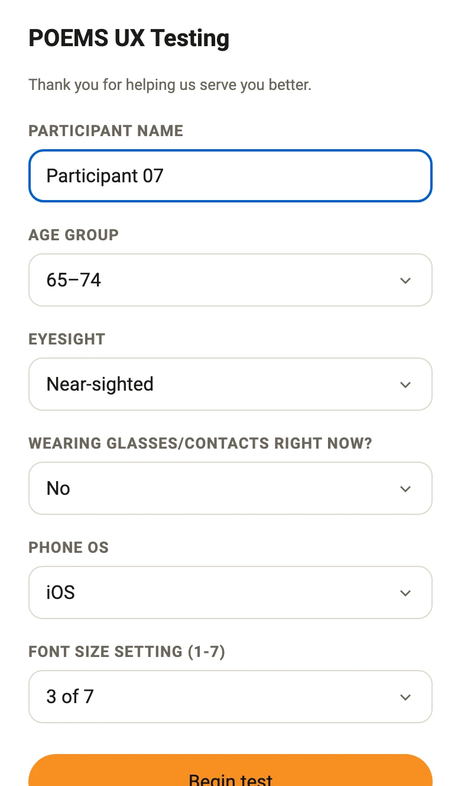
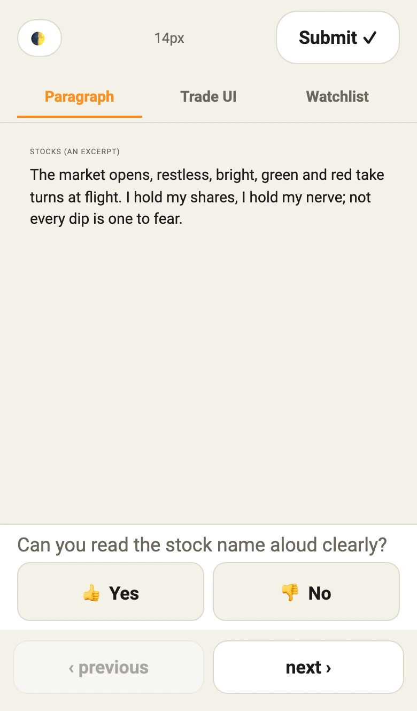
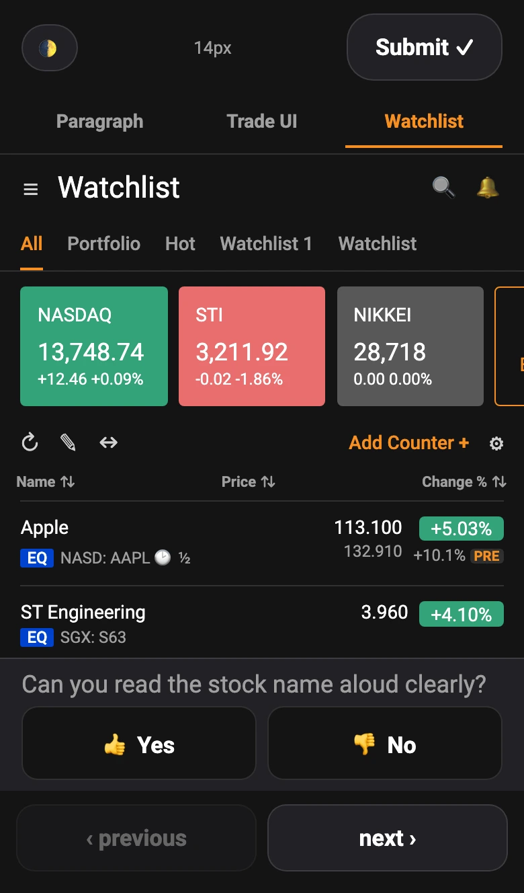
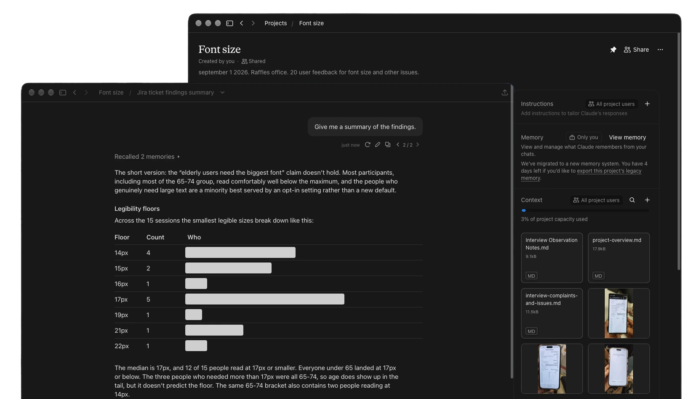

Same study, two toolkits.
A usability study on font size for older investors. With AI I built my own research instrument in 1 to 3 days, which I could not have done alone. Here is each step, what the traditional version costs, and where I kept AI out on purpose.
- Synthesis
Before: 1 to 3 monthsNow: 1 dayto a first read of 18 sessions. - Research instrument
Before: Not possibleNow: 1 to 3 daysto build my own, which my old tools never allowed. - Finding
Assumed: The largest fontFound: 17pxmedian smallest legible size, from the 15 who finished the test.
Nobody knew what big enough meant
Font size has been a recurring concern from clients and from our own team, mostly for older users and users with eyesight difficulties.
Earlier releases showed text that was too small, inconsistent across components, or that did not grow when a user chose a larger device font. The problem is sharpest on dense trading screens: Watchlist, Holdings, Orders and Positions. Bigger text wraps, truncates and crowds the columns. Scaling it back down to fit defeats the point of a larger setting.
How the problem unfolded:
- The complaint. Text was too small for some older users.
- The quick fix. Lock the font at 100% so the layout holds.
- The cost. The layout survived, but older users who rely on larger text lost the option. We knew it at the time.
- The guess. Proposals of 115% or 130%, with no one able to say whether either was enough.
- The gap. Nobody knew how big older users actually needed text, so every size was a guess.
The way out was to measure it. The study found that age alone does not justify the largest font for every older user. Participants put the comfortable minimum at 17px, and users were willing to accept wrapping and extra scrolling to keep text legible. That supports a default size and a separate larger setting, not one oversized experience for everyone.
One researcher, one observer, one week
- Their phone, their setting. A lab device would hide the text size each person already lives with.
- No research support. There was no budget for a transcription service, a panel tool or an analyst.
- No developer for the test. I design screens, I do not build and host web apps. My testing was limited to InVision, prototypes, paper prototypes, SurveyMonkey and Google Forms.
- Behaviour counts. People squint, hold the phone out at arm's length, or tap an answer they have not thought through. The data has to carry that.
- The team has to use it. Findings that sit in a slide deck get quoted once and lost.
How the study was run
A moderated, in-person usability study, run on each participant's own phone.
- Format
- One person running the session and one observer. Video and audio recorded.
- Participants
- 18 older investors took part on their own phones. 15 completed the font test and the other 3 gave feedback only. Age group, eyesight, glasses on or off and the phone's text-size setting were noted for each.
- Task
- Read a stock name aloud at each of eight sizes, 14px to 23px, in light and dark mode. Answer yes or no. The same sizes appeared on a mock Trade screen and a mock Watchlist.
- Controls
- A new stock name at every size, all of similar length, so nothing could be memorised.
- Captured
- A results table per person, observer notes on squinting, arm stretch and hesitation, short survey answers and open feedback.
- Analysis
- Recordings transcribed on my laptop. Transcripts, survey results, feedback and notes pulled together with Claude. Quotes checked against the recording.
Five steps, three of them with AI
Each step as it ran in my past studies, and as it ran this time.
| Step | Before AI | Now, with AI | Used AI? |
|---|---|---|---|
| Research instrument | Not possible. I was limited to prototypes, paper and survey tools. | A custom research instrument, written and hosted on my own GitHub in 1 to 3 days. 50 small changes over 5 days. | Yes |
| Sessions | One person running the session and one taking notes, in person. | The same. 18 participants, 15 of them completing the font test, 1 day. | No |
| Observer notes | Squinting, arm stretch, hesitation, written by hand. | The same. A person watching a person. | No |
| Synthesis | Typing up the video, tallying the survey results, then sorting user feedback and observer notes into themes, all by hand. 1 to 3 months. | Transcripts in about 40 minutes on my laptop, audio kept on the machine. Then transcripts, surveys, feedback and notes pulled together: themes across all sessions the next day. | Yes |
| Sharing | A Confluence page, or a slide in a meeting. 2 to 5 days to prepare. | A shared Claude project the team can ask questions of. 1 day. | Yes |
- Me
- With AI
- Research instrumentBefore AI: Not possibleNow: 1 to 3 days
- SessionsBefore AI: 1 dayNow: 1 day
- Observer notesBefore AI: By handNow: By hand
- SynthesisBefore AI: 1 to 3 monthsNow: 1 day
- SharingBefore AI: 2 to 5 daysNow: 1 day
The biggest change is not the time. Prototypes, paper and survey forms show content in a fixed order, so a participant can learn the answer from an earlier screen. My research instrument shows a new stock name at every size, all of similar length, on the participant's own phone in light and dark mode. That tests the question directly and removes the bias a prototype carries.

Intake. Age, eyesight, glasses on or off, and the phone's own text size.
The smallest size, 14px. One question: can you read the stock name aloud?
And on a mock Watchlist, in dark mode.The biggest time saving is in synthesis: 1 to 3 months in past studies, and the first read of all sessions the next day.
The last step is sharing. A Confluence page or a slide took me 2 to 5 days to prepare. This time I put the findings in a Claude project and shared it with my team in one day. It holds the observer notes, a project overview, a complaints file and the photographed results, and anyone on the team can ask it a question.

What I handed over, and what I kept
Handed over. The research instrument, the transcripts, the first read of the themes, and a Claude project my team can ask questions of. These are the parts where speed matters and a mistake is cheap to catch.
Kept. Running the sessions, the observer's notes, and every call on what a participant's answer meant. A model cannot see someone lean back from the screen. The notes are also my check on answers a participant gave without being sure.
Gave up. Clean transcripts. The speaker labels are unreliable, so a line can land on the wrong person. Every quote has to be checked against the recording before it goes in a report.
How I check what AI gave me
- Quotes against recordings. Nothing in a formal report until I have heard it.
- Taps against notes. Where the observer wrote "squinted" or "unsure" and the participant tapped Yes, I treat that answer as lower confidence.
- Sample size beside every number. A figure from a small group is directional, so it should travel with the count of people behind it.
What I assumed, and what held
Older users need the largest font.
Most read well below the maximum. The median was 17px.
Age tells us who needs bigger text.
Age only showed in the tail. Everyone under 65 read at 17px or below.
Eyesight type sets the size.
A weak predictor. Glasses on, and visible strain, said more.
The phone's own text-size setting tells us the size.
Also weak. Two people on the largest setting needed 15px and 21px.
Some people need a larger option.
A minority do. Best as an opt-in setting.
Readers will not accept wrapping and extra scrolling.
They accept both to keep text legible.
From a small group, so read the sizes as directional, not as a rule.
What I'd change, and the rule I took
I would give every recording, note sheet, survey row and result photo the same participant ID on day one, and keep names out of anything the team can query. With four sources per session, the link between them decides whether a model blends two people into one.
The rule I took from it: use AI where the work is typing, sorting and searching, and keep people where the work is watching and judging. The traditional study wastes time on the first kind. It cannot do without the second.